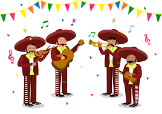
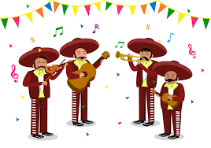

¿Que es la guitarra?
Partes de la guitarra
Origen
Evolucion
La presencia de guitarra en la cultura occidental y nacional
Interpretes destacados a traves de su historia
Videoteca
Referencias
¿Que es la guitarra?
Partes de la guitarra
Origen
Evolucion
La presencia de guitarra en la cultura occidental y nacional
Interpretes destacados a traves de su historia
Videoteca
Referencias
La guitarra es un instrumento musical de cuerdas que produce sonido al hacerlas vibrar. Tiene una caja de resonancia de madera con forma de ocho y un agujero en el centro. También tiene un mástil con trastes o alambres de metal para distinguir las notas y un clavijero donde se sujetan las seis cuerdas.(1)
La guitarra sirve como una herramienta de comunicación donde se expresan el universo de realidades humanas.(n.a.)
...dicen que en noche nublada,si su guitarra algún mozo, en el sendero de un pozo deja de intento colgada... viene la sombra callada y al envolverla en su manto... suena el preludio de un canto entre las cuerdas dormidas... cuerdas que vibran heridas como por gotas de llanto...(2)


 

...con la guitarra en la mano, ni las moscas se me arriman...naides me pone el pie encima... y cuando el pecho se entona, hago gemir a la prima y llorar a la bordona...(3)
𝄞 ♫ ♪ ♪ ♩ 𝄞 ♫ ♪ ♪ ♩ 𝄞 ♫ ♪ ♪ ♩ 𝄞 ♫ ♪ ♪ ♩ 𝄞 ♫ ♪ ♪ ♩ 𝄞 ♫ ♪ ♪ ♩ 𝄞 ♫ ♪ ♪ ♩ 𝄞 ♫ ♪ ♪ ♩ 𝄞 ♫ ♪ ♪ ♩ 𝄞 ♫ ♪ ♪ ♩ 𝄞 ♫ ♪ ♪ ♩ ♫ ♪ ♪ ♩ 𝄞 ♫ ♪ ♪ ♩ 𝄞 ♫ ♪ ♪ ♩ 𝄞 ♫ ♪ ♪ ♩ 𝄞 ♫ ♪ ♪ ♩ 𝄞 ♫ ♪ ♪ ♩♩ 𝄞 ♫ ♪ ♪ ♩ ♫ ♪ ♪ ♩ 𝄞 ♫ ♪ ♪ ♩ 𝄞 ♫ ♪ ♪ ♩ 𝄞 ♫ ♪ ♪ ♩ 𝄞 ♫ ♪ ♪ ♩ 𝄞